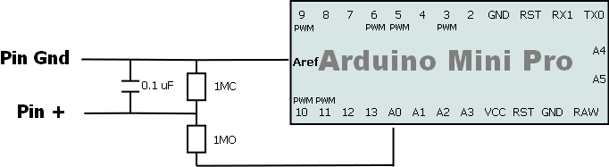

Foreword
This poor man oscilloscope is based on an
excellent tutorial from Vassilis Serasidis. This is why this project is named after his, ard
AnotherOscillo.
Purpose is to provide a windows PC displayable signal for low voltage (max 5V) and low frequency but cost/complexity cutting by using a windows application for design. (instead of using an embeded screen).
Edit: I decided to be no more poor man and bought this. Very good tool, however both are maybe complementary.
http://www.seeedstudio.com/depot/dso-nano-pocket-size-digital-storage-oscilloscope-p-512.html?cPath=11
Schema

Code
int potPin = 0; // select the input pin for the potentiometer
int val = 0; // variable to store the value coming from the sensor
void setup() {
analogReference(DEFAULT);
Serial.begin(115200);
}
void loop() {
val = analogRead(potPin); // read the value from the sensor
Serial.println(val);
delay(100);
}